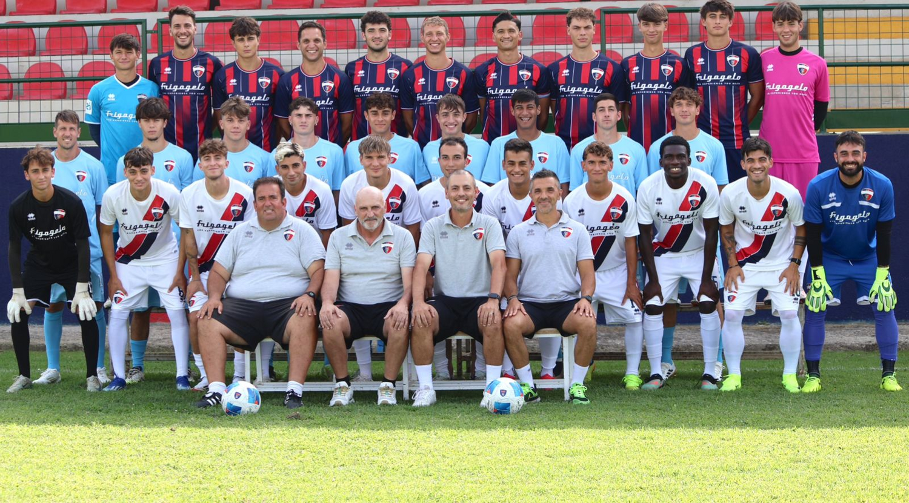

La mia carriera
Sono un difensore centrale classe 2009, cresciuto calcisticamente nella Don Bosco, dove ho giocato per sette anni formando il mio carattere e la mia identità in campo. In quel percorso ho imparato disciplina, senso della posizione e spirito di squadra. Quest’anno ho scelto di mettermi in gioco cambiando maglia e iniziando una nuova avventura con il Cannara. Con questa nuova squadra voglio continuare a crescere, migliorare ogni giorno e dare il massimo per difendere i nostri colori. Determinazione, grinta e concentrazione sono le qualità che porto sempre con me in campo. usaparole piu semplici Sono un difensore centrale nato nel 2009. Ho giocato per sette anni alla Don Bosco, dove sono cresciuto tanto come giocatore e come persona. Quest’anno ho cambiato squadra e ora gioco con il Cannara. Per me è una nuova sfida e voglio fare sempre del mio meglio. In campo do tutto, con impegno e voglia di migliorare ogni giorno.
